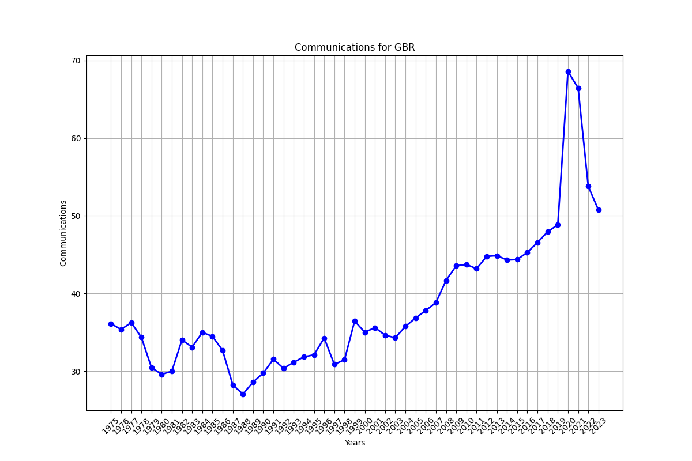

======== Series: BM.GSR.CMCP.ZS Aggregationmethod: Weighted average -------- Generalcomments: Note: Data are based on the sixth edition of the IMF's Balance of Payments Manual (BPM6) and are only available from 2005 onwards. -------- IndicatorName: Communications, computer, etc. (% of service imports, BoP) -------- License_Type: CC BY-4.0 -------- License_URL: https://datacatalog.worldbank.org/public-licenses#cc-by -------- Longdefinition: Communications, computer, information, and other services cover international telecommunications; computer data; news-related service transactions between residents and nonresidents; construction services; royalties and license fees; miscellaneous business, professional, and technical services; personal, cultural, and recreational services; manufacturing services on physical inputs owned by others; and maintenance and repair services and government services not included elsewhere. -------- Periodicity: Annual -------- Source: International Monetary Fund, Balance of Payments Statistics Yearbook and data files. -------- Topic: Economic Policy & Debt: Balance of payments: Current account: Goods, services & income
| Year | Data |
|---|---|
| 1975 | 36.1103973323 |
| 1976 | 35.3629121388183 |
| 1977 | 36.2347456177914 |
| 1978 | 34.3559562494674 |
| 1979 | 30.4446296527505 |
| 1980 | 29.5916718985478 |
| 1981 | 29.9747306541921 |
| 1982 | 34.0177747316582 |
| 1983 | 33.0735545293911 |
| 1984 | 34.9966865813611 |
| 1985 | 34.4674518942622 |
| 1986 | 32.6675750691589 |
| 1987 | 28.2377252525918 |
| 1988 | 27.0333458730037 |
| 1989 | 28.5918167990647 |
| 1990 | 29.7411213340045 |
| 1991 | 31.5259237578051 |
| 1992 | 30.3526351584108 |
| 1993 | 31.132259897766 |
| 1994 | 31.8364425072252 |
| 1995 | 32.0959580877925 |
| 1996 | 34.2610502400447 |
| 1997 | 30.8654892403742 |
| 1998 | 31.458649903917 |
| 1999 | 36.438674771146 |
| 2000 | 35.000894277354 |
| 2001 | 35.6008327935938 |
| 2002 | 34.6203210174379 |
| 2003 | 34.2905923934499 |
| 2004 | 35.7571450689908 |
| 2005 | 36.8342547820205 |
| 2006 | 37.8074418131149 |
| 2007 | 38.8133203496916 |
| 2008 | 41.6793528451241 |
| 2009 | 43.559649123931 |
| 2010 | 43.7269547855847 |
| 2011 | 43.1812929215205 |
| 2012 | 44.7636456429048 |
| 2013 | 44.8691848898329 |
| 2014 | 44.3021237414833 |
| 2015 | 44.3615393232099 |
| 2016 | 45.2796988640657 |
| 2017 | 46.5576359370557 |
| 2018 | 47.9292007670609 |
| 2019 | 48.8395911504193 |
| 2020 | 68.5731223617316 |
| 2021 | 66.4531466708398 |
| 2022 | 53.7794269517127 |
| 2023 | 50.7499463073662 |
| Data Source | ', 'World Development Indicators | ', 'Unnamed: 2 | ', 'Unnamed: 3 | ', 'Unnamed: 4 | ', 'Unnamed: 5 | ', 'Unnamed: 6 | ', 'Unnamed: 7 | ', 'Unnamed: 8 | ', 'Unnamed: 9 | ', 'Unnamed: 10 | ', 'Unnamed: 11 | ', 'Unnamed: 12 | ', 'Unnamed: 13 | ', 'Unnamed: 14 | ', 'Unnamed: 15 | ', 'Unnamed: 16 | ', 'Unnamed: 17 | ', 'Unnamed: 18 | ', 'Unnamed: 19 | ', 'Unnamed: 20 | ', 'Unnamed: 21 | ', 'Unnamed: 22 | ', 'Unnamed: 23 | ', 'Unnamed: 24 | ', 'Unnamed: 25 | ', 'Unnamed: 26 | ', 'Unnamed: 27 | ', 'Unnamed: 28 | ', 'Unnamed: 29 | ', 'Unnamed: 30 | ', 'Unnamed: 31 | ', 'Unnamed: 32 | ', 'Unnamed: 33 | ', 'Unnamed: 34 | ', 'Unnamed: 35 | ', 'Unnamed: 36 | ', 'Unnamed: 37 | ', 'Unnamed: 38 | ', 'Unnamed: 39 | ', 'Unnamed: 40 | ', 'Unnamed: 41 | ', 'Unnamed: 42 | ', 'Unnamed: 43 | ', 'Unnamed: 44 | ', 'Unnamed: 45 | ', 'Unnamed: 46 | ', 'Unnamed: 47 | ', 'Unnamed: 48 | ', 'Unnamed: 49 | ', 'Unnamed: 50 | ', 'Unnamed: 51 | ', 'Unnamed: 52 | ', 'Unnamed: 53 | ', 'Unnamed: 54 | ', 'Unnamed: 55 | ', 'Unnamed: 56 | ', 'Unnamed: 57 | ', 'Unnamed: 58 | ', 'Unnamed: 59 | ', 'Unnamed: 60 | ', 'Unnamed: 61 | ', 'Unnamed: 62 | ', 'Unnamed: 63 | ', 'Unnamed: 64 | ', 'Unnamed: 65 | ', 'Unnamed: 66 | ', 'Unnamed: 67 | ', 'Unnamed: 68 | ']
|---|---|---|---|---|---|---|---|---|---|---|---|---|---|---|---|---|---|---|---|---|---|---|---|---|---|---|---|---|---|---|---|---|---|---|---|---|---|---|---|---|---|---|---|---|---|---|---|---|---|---|---|---|---|---|---|---|---|---|---|---|---|---|---|---|---|---|---|---|
| Last Updated Date | 2025-04-15 00:00:00 | nan | nan | nan | nan | nan | nan | nan | nan | nan | nan | nan | nan | nan | nan | nan | nan | nan | nan | nan | nan | nan | nan | nan | nan | nan | nan | nan | nan | nan | nan | nan | nan | nan | nan | nan | nan | nan | nan | nan | nan | nan | nan | nan | nan | nan | nan | nan | nan | nan | nan | nan | nan | nan | nan | nan | nan | nan | nan | nan | nan | nan | nan | nan | nan | nan | nan | nan |
| nan | nan | nan | nan | nan | nan | nan | nan | nan | nan | nan | nan | nan | nan | nan | nan | nan | nan | nan | nan | nan | nan | nan | nan | nan | nan | nan | nan | nan | nan | nan | nan | nan | nan | nan | nan | nan | nan | nan | nan | nan | nan | nan | nan | nan | nan | nan | nan | nan | nan | nan | nan | nan | nan | nan | nan | nan | nan | nan | nan | nan | nan | nan | nan | nan | nan | nan | nan | nan |
| Country Name | Country Code | Indicator Name | Indicator Code | 1960.0 | 1961.0 | 1962.0 | 1963.0 | 1964.0 | 1965.0 | 1966.0 | 1967.0 | 1968.0 | 1969.0 | 1970.0 | 1971.0 | 1972.0 | 1973.0 | 1974.0 | 1975.0 | 1976.0 | 1977.0 | 1978.0 | 1979.0 | 1980.0 | 1981.0 | 1982.0 | 1983.0 | 1984.0 | 1985.0 | 1986.0 | 1987.0 | 1988.0 | 1989.0 | 1990.0 | 1991.0 | 1992.0 | 1993.0 | 1994.0 | 1995.0 | 1996.0 | 1997.0 | 1998.0 | 1999.0 | 2000.0 | 2001.0 | 2002.0 | 2003.0 | 2004.0 | 2005.0 | 2006.0 | 2007.0 | 2008.0 | 2009.0 | 2010.0 | 2011.0 | 2012.0 | 2013.0 | 2014.0 | 2015.0 | 2016.0 | 2017.0 | 2018.0 | 2019.0 | 2020.0 | 2021.0 | 2022.0 | 2023.0 | 2024.0 |
| United Kingdom | GBR | Communications, computer, etc. (% of service imports, BoP) | BM.GSR.CMCP.ZS | nan | nan | nan | nan | nan | nan | nan | nan | nan | nan | 42.6207362377575 | 38.550027460812075 | 32.35588684384663 | 33.20290941956758 | 33.5148977567146 | 36.110397332300046 | 35.3629121388183 | 36.23474561779139 | 34.35595624946741 | 30.44462965275055 | 29.591671898547784 | 29.974730654192115 | 34.01777473165815 | 33.073554529391146 | 34.99668658136108 | 34.46745189426219 | 32.66757506915888 | 28.237725252591762 | 27.03334587300372 | 28.591816799064745 | 29.74112133400453 | 31.525923757805103 | 30.352635158410813 | 31.132259897766048 | 31.836442507225154 | 32.09595808779254 | 34.261050240044746 | 30.86548924037425 | 31.458649903917035 | 36.43867477114597 | 35.000894277354 | 35.60083279359381 | 34.62032101743787 | 34.29059239344988 | 35.757145068990795 | 36.8342547820205 | 37.80744181311494 | 38.81332034969162 | 41.67935284512414 | 43.55964912393099 | 43.726954785584695 | 43.18129292152048 | 44.76364564290482 | 44.869184889832944 | 44.30212374148329 | 44.361539323209946 | 45.27969886406567 | 46.55763593705569 | 47.929200767060905 | 48.83959115041925 | 68.57312236173159 | 66.45314667083979 | 53.779426951712715 | 50.74994630736619 | nan |